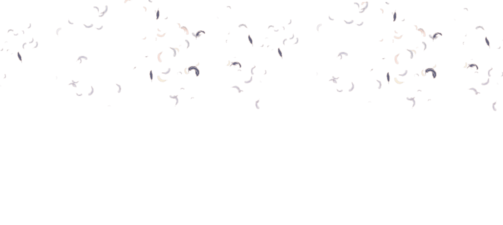
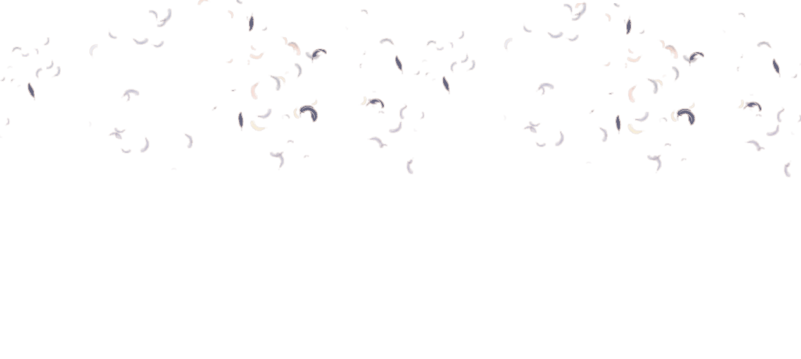

01
Explore New Topic
We want to seek out new and interesting subjects for our audience to learn about, expanding their views and bringing up some curiosity.
.png) 

SoTrum! A live podcast all about research, stories, opinions, and theories. Committed to provide valuable and inspiring content that divides the gap between theory and reality. We are your partners on the journey of discovery, where learning and entertainment comes together.
We want to seek out new and interesting subjects for our audience to learn about, expanding their views and bringing up some curiosity.
We aim to create a space where our audience can connect with the research, stories we share, opinions, and theories we explore. By diving into these, we want a sense of shared understanding and discovery.
Our dedicated team, of course, works collaboratively, enhancing our talents and knowledge to craft content that resonates with our audience. This collaborative approach ensures that our content is both informative and entertaining.
An interactive live podcast all about research, stories, opinions, and theories. Where all aspects are both educational and enlightening as all information are true with SoTrum.
SoTrum is a word that combines the popular phrase "So True" and the word "Spectrum", meaning that it wants to explore different spectrums of a topic and discuss it in a way that just makes you say "So True"!
SoTrum is an eight member podcast that was created wanting to explore and broaden the vast ideas of different research theories, stories, opinions and ideas.
You can find SoTrum in Facebook and Instagram. You can send us an email at sotrumpodcast@gmail.com to get in contact with us. We will answer all your queries within 1-3 business days. We welcome any messages or questions regarding our socials and are willing to assist you at any time.
SoTrum's goal is to be able to freely discuss the theories and opinions coming from multiple different perspectives, and to allow it's audience to maintain an open mind.
SoTrum means to explore and discuss the different spectrums of each theories or concepts that are discussed. The name SoTrum comes from the popular phrase "So True" and the word "Spectrum".
In SoTrum it is encouraged to have an open mind and see people's differentiating opinions. In a way that it helps us understand more about different perspectives of topics and concepts, underlying the objective and aim of articles helps us be critical thinkers.